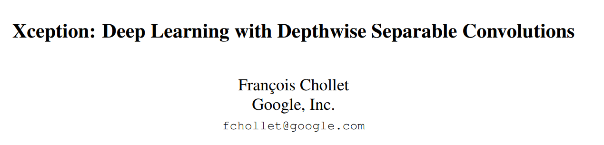
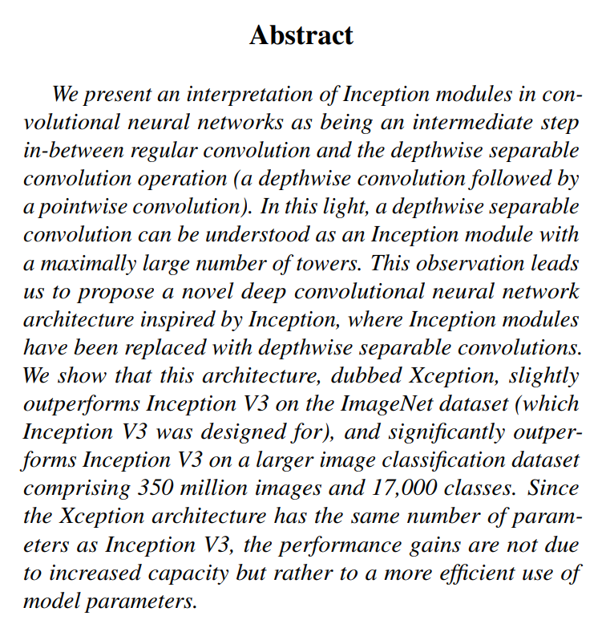
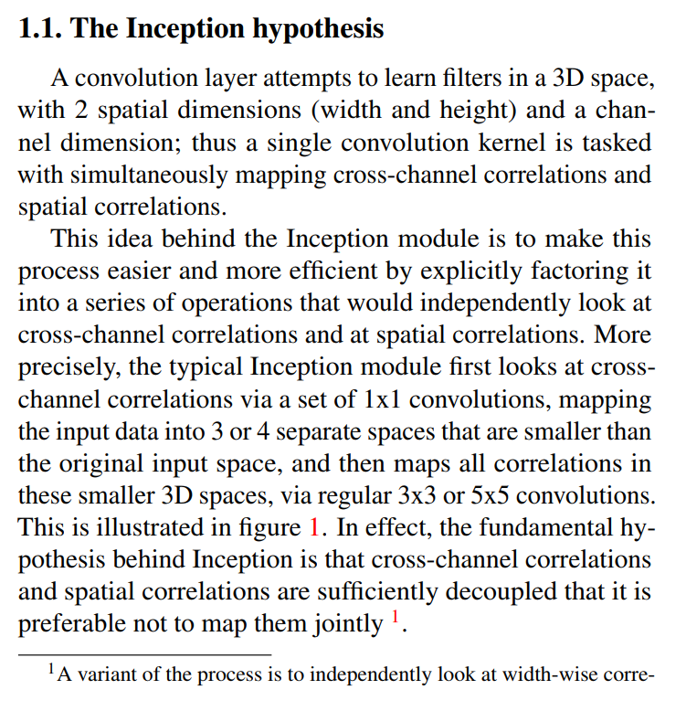
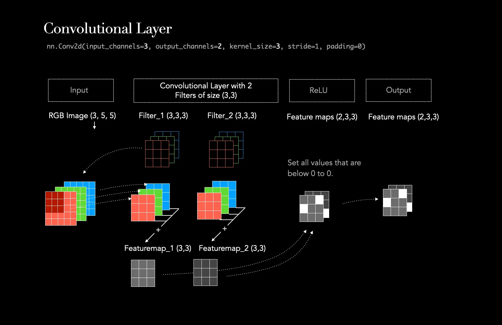
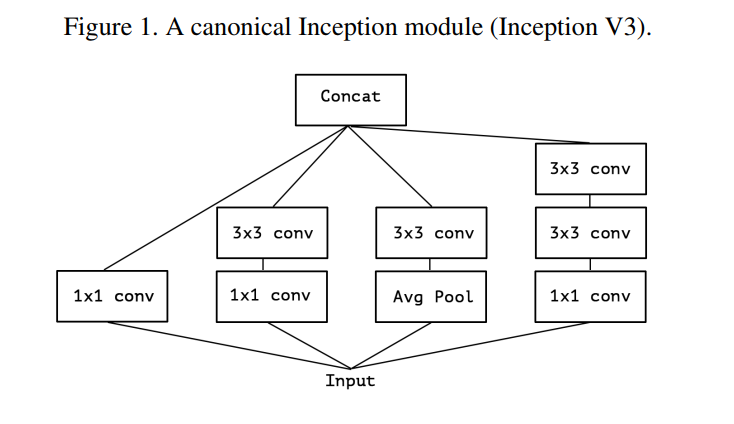
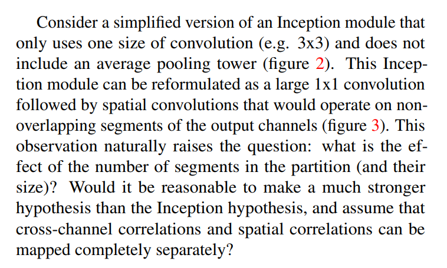
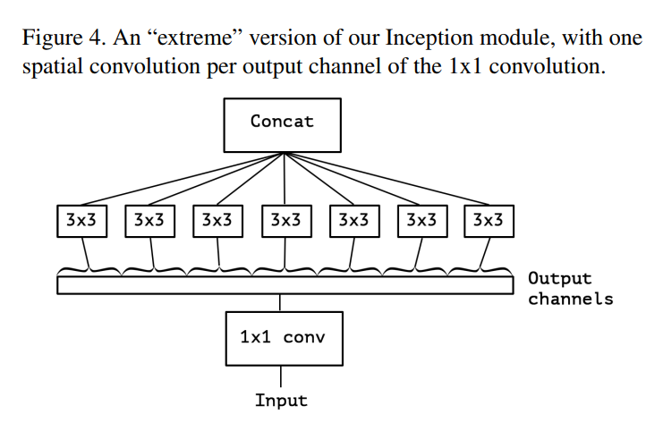
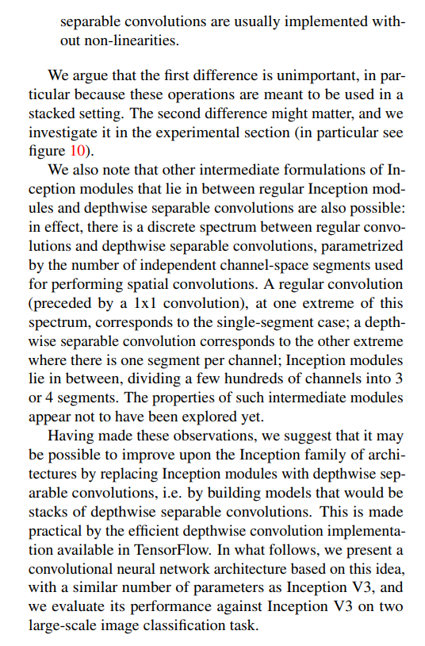
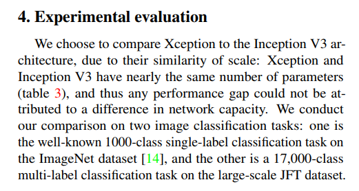
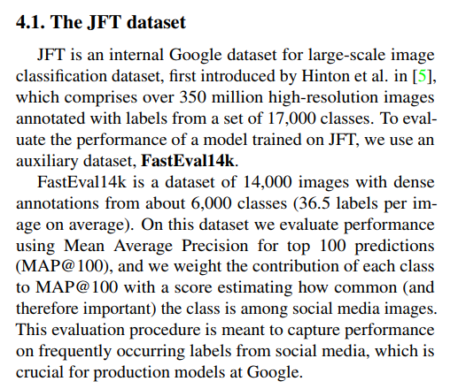

Xception Explained: A Deep Dive into Extreme Inception and Smarter Convolutions
Introduction
In the world of deep learning, certain papers stand out not just for their results, but for the elegance and power of their core ideas. They shift our perspective on how to design neural networks. François Chollet’s 2017 paper, “Xception: Deep Learning with Depthwise Separable Convolutions,” is one of those papers. While many know Chollet as the creator of the popular Keras library, his work on the Xception architecture provides a masterclass in reasoning about the fundamental building blocks of computer vision models.

These architectures, with names like ResNet, Inception, and VGG, can often feel like complex, intimidating black boxes. How did their creators come up with these designs? What intuition were they following? The Xception paper is a perfect case study because it lays out its chain of reasoning with remarkable clarity. It starts with a well-known architecture (Inception), re-examines its core hypothesis, and pushes that hypothesis to its logical conclusion.
In this post, we’ll take a guided tour through the Xception paper, breaking it down step by step to reveal the simple yet powerful ideas behind it. By the end, you’ll understand what makes Xception work and why its core — the depthwise separable convolution — has become a key element of modern network design.
Let’s start with the abstract.
The Abstract: Xception in a Nutshell
Let’s start at the very beginning, on page 1, with the Abstract. A paper’s abstract is its elevator pitch; it contains the core idea, the proposed solution, the main results, and the key takeaway all in one tight package. Xception’s abstract is a perfect example of this, laying out the entire story in just five sentences.

The Core Insight: Placing Inception on a Spectrum
The abstract begins with the paper’s central theoretical claim:
(Page 1, Abstract): “We present an interpretation of Inception modules in convolutional neural networks as being an intermediate step in-between regular convolution and the depthwise separable convolution operation (a depthwise convolution followed by a pointwise convolution).”
This single sentence is the foundation for everything that follows. Let’s break it down. The author, François Chollet, isn’t just proposing a new component; he’s suggesting a new way to think about existing ones. He outlines a spectrum of operations:
- At one end: The regular convolution, the workhorse of classic networks like VGG. A single filter in a regular convolution is tasked with doing two jobs at once: identifying patterns across spatial locations (like the shape of an edge) and identifying patterns across its input channels (like which features tend to appear together).
- At the other end: The depthwise separable convolution. This operation explicitly decouples the two jobs. It first performs a “depthwise” spatial convolution (finding spatial patterns in each channel independently) and then a “pointwise” convolution (a 1x1 convolution that combines information across channels).
- In the middle: The Inception module. Chollet’s key insight is that Inception is a compromise between these two extremes. It partially separates the two jobs but doesn’t go all the way.
The “Extreme” Hypothesis
The next sentence makes this “spectrum” idea even more concrete:
(Page 1, Abstract): “In this light, a depthwise separable convolution can be understood as an Inception module with a maximally large number of towers.”
An Inception module is famously built from parallel paths or “towers” (e.g., a 1x1 convolution tower, a 3x3 tower, etc.). Chollet asks us to imagine taking this design to its logical limit. What if, instead of 3 or 4 towers, you created a separate, tiny tower for every single input channel? If you did that, he argues, you would have effectively reinvented the depthwise separable convolution. It is the most extreme, most factored version of an Inception module possible.
The Proposal and the Results
This insight directly leads to a practical experiment: if a depthwise separable convolution is an “Extreme Inception” module, what happens if we build a whole network out of them?
(Page 1, Abstract): “This observation leads us to propose a novel deep convolutional neural network architecture inspired by Inception, where Inception modules have been replaced with depthwise separable convolutions. We show that this architecture, dubbed Xception, slightly outperforms Inception V3 on the ImageNet dataset (which Inception V3 was designed for), and significantly outperforms Inception V3 on a larger image classification dataset…”
Here we get the name, Xception, and the top-line results:
- On the standard ImageNet benchmark, it’s slightly better than its predecessor, Inception V3.
- On a massive internal Google dataset (JFT) with 350 million images, it’s significantly better. This is a crucial finding, suggesting that the Xception design principle scales more effectively when given enormous amounts of data.
The Reason for Success: Efficiency
The final sentence addresses the most important question: why is it better? Is it just a bigger model?
(Page 1, Abstract): “Since the Xception architecture has the same number of parameters as Inception V3, the performance gains are not due to increased capacity but rather to a more efficient use of model parameters.”
This is the punchline. The improvement doesn’t come from brute force. Xception has roughly the same number of learnable parameters as Inception V3. This implies that the architecture itself—the principle of completely decoupling spatial and cross-channel correlations—is a fundamentally more efficient way for a model to learn. It gets more mileage out of the same capacity.
In just one paragraph, we have our entire story. Now, let’s dive into the Introduction to see how Chollet builds his case in greater detail.
The Introduction: Setting the Stage for a New Architecture
The introduction of a paper serves to provide context, frame the problem, and lay out the argument that the rest of the paper will support. On page 1, Chollet walks us through the history of convolutional neural network (CNN) design to show us exactly where his contribution fits in.
{kind=link}
{kind=link}
A Brief History of CNN Design (Pre-Inception)
The first paragraph is a whirlwind tour of the evolution of CNNs, highlighting a clear trend.
(Page 1, Introduction, Para 1): “The history of convolutional neural network design started with LeNet-style models…, which were simple stacks of convolutions for feature extraction and max-pooling… In 2012, these ideas were refined into the AlexNet architecture…, where convolution operations were being repeated multiple times in-between max-pooling operations… What followed was a trend to make this style of network increasingly deeper… first with Zeiler and Fergus in 2013… and then with the VGG architecture in 2014.”
This narrative establishes a dominant design philosophy that we can call the “linear stacking” era:
- LeNet: The original recipe was simple: a convolution layer to find features, immediately followed by a pooling layer to reduce the image size. Think
Conv -> Pool -> Conv -> Pool. - AlexNet: The 2012 breakthrough that kickstarted the modern deep learning revolution. The key innovation was to stack multiple convolution layers back-to-back before pooling (e.g.,
Conv -> Conv -> Pool). This allowed the network to learn more complex and hierarchical features at a given spatial resolution. - ZFNet & VGG: The main trend following AlexNet’s success was simply to go deeper. Architects kept adding more layers, driven by the belief that depth was the primary driver of performance. The VGG network is the epitome of this philosophy—an extremely deep but structurally simple stack of 3x3 convolutions and pooling layers.
This history lesson successfully paints a picture of a research field pursuing one primary direction: making networks deeper and deeper. This sets the stage for a paradigm shift.
The Paradigm Shift: Enter Inception
The next few paragraphs introduce the architecture that broke this linear trend.
(Page 1, Introduction, Para 2): “At this point a new style of network emerged, the Inception architecture… Since its first introduction, Inception has been one of the best performing family of models on the ImageNet dataset…”
(Page 1, Introduction, Para 3): “The fundamental building block of Inception-style models is the Inception module… This is a departure from earlier VGG-style networks which were stacks of simple convolution layers.”
Instead of just stacking simple convolution layers, the Inception family (starting with GoogLeNet) introduced a new fundamental building block: the Inception module. An entire Inception network is a stack of these more complex modules. This was a radical departure from the simple, VGG-style design. The author establishes that this new style wasn’t just a novelty; it was (and is) a family of top-performing models, justifying why it’s a worthy subject of study.
The Central Question: Why Does Inception Work?
Having established Inception’s success, the author poses the core questions that motivate the rest of the paper.
(Page 1, Introduction, Para 4): “While Inception modules are conceptually similar to convolutions…, they empirically appear to be capable of learning richer representations with less parameters. How do they work, and how do they differ from regular convolutions? What design strategies come after Inception?”
This is the most important part of the introduction. It highlights the key advantage of the Inception style: parameter efficiency. Inception modules achieve better results than their predecessors while using fewer parameters, making them computationally cheaper and more powerful. This naturally leads to the three questions the Xception paper sets out to answer:
- What is the underlying principle that makes Inception modules so efficient?
- How is this principle different from what a regular convolution does?
- Can we take this principle even further to design the next generation of architectures?
With these questions hanging in the air, we are perfectly primed for the paper’s core thesis.
Section 1.1: The Inception Hypothesis (Separating Concerns)
Now we arrive at the heart of the argument. In this section on page 1, Chollet articulates the fundamental assumption—the “Inception hypothesis”—that he believes explains the efficiency of the Inception module.

The Dual Role of a Standard Convolution
First, he defines what a standard convolution is trying to accomplish, and why that might be an inefficient way to learn.
(Page 1, Section 1.1, Para 1): “A convolution layer attempts to learn filters in a 3D space, with 2 spatial dimensions (width and height) and a channel dimension; thus a single convolution kernel is tasked with simultaneously mapping cross-channel correlations and spatial correlations.”
This is a crucial observation. A standard convolution filter (e.g., a single 3x3 kernel) is asked to do two very different jobs at the same time:
- Map Spatial Correlations: It looks for patterns in a small neighborhood of pixels. For example, it learns what arrangement of pixels constitutes a horizontal edge, a corner, or a patch of a certain texture. This is about relationships in the height and width dimensions.
- Map Cross-Channel Correlations: Deeper in a network, the channels don’t represent colors (RGB) anymore; they represent abstract features (e.g., “is there a vertical line here?”, “is there fur texture here?”, “is there a shiny reflection here?”). Cross-channel correlations are the relationships between these features at the same location. For instance, the network might learn that the co-occurrence of a “fur texture” feature and an “ear-shape” feature is a strong indicator of a “cat.” This is about relationships in the channel dimension.
The key word here is “simultaneously.” A standard convolution tries to learn both types of patterns with a single set of weights, which may not be the most effective way to model these two potentially independent sets of correlations.
A Concrete Example: The Standard Convolution at Work
To make this idea of “simultaneously mapping correlations” clearer, let’s walk through a quick example.
Imagine we are in the middle of a deep network. The input to our next layer is a feature map with the following dimensions:
- Height: 14 pixels
- Width: 14 pixels
- Channels (Depth): 256
Our goal is to apply a standard 3x3 convolutional layer that will produce a new feature map with 512 channels.
The Anatomy of a Filter
To achieve this, our convolutional layer needs 512 separate filters (sometimes called kernels). Here’s the crucial part: each one of those 512 filters must have a depth that matches the input depth.
So, a single filter in our layer will have the dimensions:
- Filter Height: 3 pixels
- Filter Width: 3 pixels
- Filter Channels (Depth): 256
Each filter is a 3x3x256 cube of learnable weights.
The Operation
When we apply just one of these filters to the input feature map, the following happens:
- The
3x3x256filter is placed over a3x3patch of the input. - A dot product is computed. This involves multiplying every one of the
3 * 3 * 256 = 2,304weights in the filter with the corresponding input value and summing them all up. - The result is a single number, which becomes one pixel in the output feature map.
Notice what happened in that dot product. The filter’s weights had to learn:
- The correct spatial pattern (which of the 9 spatial locations are important).
- The correct cross-channel pattern (which of the 256 input features are important and how they should be combined).
It learned both of these things simultaneously within that single cube of 2,304 weights. The convolutional layer then slides this filter across the entire input and repeats the process with the other 511 filters to produce the final 14x14x512 output.
This is the standard, powerful, but potentially inefficient process that the Inception Hypothesis seeks to improve upon.

Image taken from Medium post Understanding the Convolutional Filter Operation in CNN’s by Frederik vom Lehn
The Inception Solution: Factorization
The Inception module, he argues, is based on the hypothesis that it’s better to explicitly separate, or “factorize,” these two jobs.
(Page 1, Section 1.1, Para 2): “This idea behind the Inception module is to make this process easier and more efficient by explicitly factoring it into a series of operations that would independently look at cross-channel correlations and at spatial correlations… In effect, the fundamental hypothesis behind Inception is that cross-channel correlations and spatial correlations are sufficiently decoupled that it is preferable not to map them jointly.”
This is the punchline. The Inception module operates as a two-step process:
- First, map cross-channel correlations: It uses a set of 1x1 convolutions. A 1x1 convolution is a brilliant tool for this job. Because it only looks at one pixel location at a time, it can’t see any spatial patterns. Its only job is to look at the vector of all channel values at that single pixel and learn smart combinations of them—it maps the cross-channel correlations.
- Then, map spatial correlations: After the 1x1 convolutions have created new, rich feature combinations, the module then applies standard 3x3 or 5x5 convolutions within these new, smaller feature spaces to find spatial patterns.
This leads to the formal Inception Hypothesis: The model assumes that spatial patterns and channel patterns are independent enough that learning them separately is more efficient and effective than learning them together. By decoupling these tasks, the network can learn each type of correlation more easily.

To close out this section, Chollet includes a footnote that adds another layer to this idea of factorization, noting that even the spatial convolutions themselves can be factored (e.g., a 7x7 convolution can be replaced by a 7x1 followed by a 1x7). This further strengthens the case that factorization is a powerful and general principle in designing efficient neural networks.
From Inception to “Extreme Inception”
Having established the Inception hypothesis — that separating channel and spatial correlations is a good idea—Chollet now scrutinizes how Inception achieves this separation. This leads to a brilliant reframing that paves the way for Xception.

A New Way to Look at Inception
The author first simplifies the Inception module for clarity and then presents an entirely new, but equivalent, way of looking at it. This progression is brilliantly illustrated in Figures 2, 3, and 4.
(Page 2, Introduction, Para 1): “Consider a simplified version of an Inception module… (figure 2). This Inception module can be reformulated as a large 1x1 convolution followed by spatial convolutions that would operate on non-overlapping segments of the output channels (figure 3).”
Let’s trace this visual argument:
- Figure 2 (Simplified Inception): This is an Inception module with three parallel towers, each containing a 1x1 convolution followed by a 3x3 convolution. The key is that these towers are independent before being concatenated.
- Figure 3 (Equivalent Reformulation): This is the “aha!” moment. Chollet shows that Figure 2 is mathematically identical to a different structure:
- First, perform one large 1x1 convolution.
- Then, take the output channels from that convolution and split them into 3 separate, non-overlapping groups or “segments.”
- Finally, apply a 3x3 convolution to each group independently.
{kind=link}
{kind=link}
This reformulation is a conceptual breakthrough. It reveals that the essence of an Inception module is channel partitioning. It’s an operation that splits its channels into a small number of groups and performs spatial convolutions within each group.
Pushing the Hypothesis to Its Limit
This new perspective immediately begs a question, which Chollet poses directly.
(Page 2, Introduction, Para 1): “This observation naturally raises the question: what is the effect of the number of segments in the partition…? Would it be reasonable to make a much stronger hypothesis than the Inception hypothesis, and assume that cross-channel correlations and spatial correlations can be mapped completely separately?”
If an Inception module uses 3 or 4 segments, what would happen if we used 10? Or 100? What is the most extreme version of this idea?
The logical extreme is to make the number of segments equal to the number of channels, meaning each segment is only one channel deep.
This leads to the “Extreme Inception” or Xception Hypothesis: Let’s assume that channel and spatial correlations are completely decoupled. We can first use a 1x1 convolution to handle all the cross-channel learning, and then a spatial convolution that operates on every single channel independently, with zero cross-talk between them. This idea is visualized in Figure 4.

Section 1.2: Connecting to Depthwise Separable Convolutions
It turns out this “extreme” idea is not entirely new. It has a name.
{kind=link}
{kind=link}
This is the central connection of the paper. The logical conclusion of the Inception design philosophy is an existing (but perhaps underutilized at the time) operation called the depthwise separable convolution. This operation consists of two parts that perfectly match the “Extreme Inception” idea:
- A Depthwise Convolution: A spatial convolution (e.g., 3x3) that is applied to every single input channel independently. This handles the spatial correlations.
- A Pointwise Convolution: A 1x1 convolution that is used to combine the outputs of the depthwise step. This handles the cross-channel correlations.
Chollet notes two minor differences between his “Extreme Inception” formulation (pointwise first) and the standard library implementation of a depthwise separable convolution (depthwise first), but he later argues these are not significant in a deep, stacked network.
By making this connection, the paper grounds its theoretical exploration in a concrete, practical, and efficient operation. The proposal is no longer just “let’s build a crazy Inception module with hundreds of towers,” but rather, “let’s build a network out of depthwise separable convolutions.”

Image taken from paper A lightweight double-channel depthwise separable convolutional neural network for multimodal fusion gait recognition
Finalizing the Argument and Stating the Goal
Having established the powerful idea that an Inception module is just one point on a spectrum of convolutions, Chollet uses the top of page 3 to tie up loose ends and clearly state his research plan.

The Spectrum of Convolutions
First, the paper explicitly lays out this “spectrum” idea, which is the core theoretical takeaway.
(Page 3, Introduction, Para 2): “…in effect, there is a discrete spectrum between regular convolutions and depthwise separable convolutions, parametrized by the number of independent channel-space segments used for performing spatial convolutions.”
This elegant summary clarifies the entire conceptual framework:
- One Extreme (1 segment): A standard convolution block. A 1x1 convolution is followed by a regular 3x3 convolution that sees all the channels at once.
- The Middle (3 or 4 segments): An Inception module. The channels are divided into a few large groups, and a 3x3 convolution is applied within each group.
- The Other Extreme (N segments, for N channels): A depthwise separable convolution. The channels are divided into the maximum possible number of segments (one per channel), and a 3x3 spatial convolution is applied to each one completely independently.
Chollet also wisely points out that the properties of other “intermediate modules” on this spectrum (e.g., what if you used 8 or 16 segments?) are a potential area for future research.
The Grand Proposal
With this framework in place, the paper makes its final, clear proposal.
(Page 3, Introduction, Para 3): “Having made these observations, we suggest that it may be possible to improve upon the Inception family of architectures by replacing Inception modules with depthwise separable convolutions, i.e. by building models that would be stacks of depthwise separable convolutions.”
This is it. The plan is simple and elegant: take a proven, high-performing architecture (Inception) and replace its core building block with the “extreme” version of itself. Instead of a stack of Inception modules, the new network—Xception—will be a stack of depthwise separable convolution layers.
The author notes that this is only made practical by the availability of an efficient implementation of this operation in modern deep learning frameworks like TensorFlow. With the theory, the hypothesis, and the practical plan now in place, the introduction is complete. The stage is set for a detailed look at the proposed architecture and its performance.
Section 2: Standing on the Shoulders of Giants (Prior Work)
On page 3, before diving into the specifics of the new architecture, the paper takes a moment to acknowledge the key ideas and previous works it builds upon. As the saying goes, “if I have seen further, it is by standing on the shoulders of giants.” The Prior Work section shows us exactly which giants’ shoulders Xception is standing on.
{kind=link}
{kind=link}
Chollet identifies three main pillars of research that made his work possible.
Pillar 1: The VGG-16 Macro-Architecture
(Page 3, Section 2, Bullet 1): “Convolutional neural networks…, in particular the VGG-16 architecture…, which is schematically similar to our proposed architecture in a few respects.”
The first pillar is the general history of CNNs, with a special mention of VGG-16. This might seem surprising at first—VGG is known for its simple, brute-force depth, which seems philosophically opposite to the intricate efficiency of Inception. However, the author is borrowing VGG’s macro-architecture. VGG’s design is a clean, linear stack of repeating, near-identical blocks. This simple and scalable design principle—a deep stack of modules—is something Xception will adopt. In essence, Xception takes the simple, scalable body of VGG but fills it with a much smarter brain.
Pillar 2: The Inception Philosophy
(Page 3, Section 2, Bullet 2): “The Inception architecture family…, which first demonstrated the advantages of factoring convolutions into multiple branches operating successively on channels and then on space.”
The second and most important pillar is, of course, the Inception family. This is where the core philosophy of Xception comes from. The Inception papers were the first to demonstrate that “factoring” convolutions—splitting the work of mapping cross-channel and spatial correlations—was a powerful design principle that led to more efficient and accurate models. Xception is the direct intellectual descendant of this idea, seeking to take this very same principle to its logical conclusion.
Pillar 3: The History and Rise of Depthwise Separable Convolutions
The third pillar is the specific mathematical tool that makes the “Extreme Inception” idea a reality. The author provides a detailed history of this operation.
(Page 3, Section 2, Bullet 3): “Laurent Sifre developed depthwise separable convolutions during an internship at Google Brain in 2013, and used them in AlexNet to obtain small gains in accuracy and large gains in convergence speed, as well as a significant reduction in model size… Later, a depthwise separable convolution was used as the first layer of Inception V1 and Inception V2… Within Google, Andrew Howard [6] has introduced efficient mobile models called MobileNets using depthwise separable convolutions…”
This paragraph is rich with context. It tells us that the depthwise separable convolution wasn’t an obscure, brand-new idea.
- It was developed by Laurent Sifre as early as 2013 and showed promising results in improving AlexNet.
- It was even used in a limited capacity in the very first layers of early Inception models, hinting that the Google Brain team was aware of its potential.
- It became the core building block for another famous family of models, MobileNets, which are designed for extreme efficiency on mobile devices.
- Finally, the author reiterates that his work is only practical because of the efficient implementation available in TensorFlow. This grounds the research in real-world engineering.
Pillar 4: The Power of Residual Connections
The final ingredient is arguably one of the most important deep learning innovations of the 2010s.
(Page 3, Section 2, Bullet 4): “Residual connections, introduced by He et al. in [4], which our proposed architecture uses extensively.”
This is a crucial addition. Residual connections (or “skip connections”), made famous by the ResNet paper, are shortcuts that allow the gradient to flow more easily through very deep networks. They work by adding the input of a block to its output, making it easier for the network to learn identity functions and preventing performance from degrading as more layers are added. By stating that Xception “uses [them] extensively,” Chollet is signaling that his architecture is not just a pure “Inception-style” model, but a hybrid that marries the “Extreme Inception” idea with the deep-training stability of ResNet.
In summary, Xception is a brilliant synthesis: it combines the clean, scalable structure of VGG with the factorization philosophy of Inception, made stable by the residual connections of ResNet, and all implemented using the efficient tool of the depthwise separable convolution.
Section 3: The Blueprint of the Xception Architecture
After setting the historical and theoretical stage, the paper finally unveils its proposed architecture on page 3. This section explains the high-level design principles and structure of Xception.
{kind=link}
{kind=link}
The Core Principle and the Name
The section begins by restating the core idea and formally giving the architecture its memorable name.
(Page 3, Section 3, Para 1): “We propose a convolutional neural network architecture based entirely on depthwise separable convolution layers… Because this hypothesis is a stronger version of the hypothesis underlying the Inception architecture, we name our proposed architecture Xception, which stands for ‘Extreme Inception’.”
This is the mission statement. The network is a pure expression of a single idea: what happens if you build a deep CNN entirely out of depthwise separable convolutions? The name: “Extreme Inception,” perfectly captures this philosophy of taking the Inception idea to its logical limit. The central hypothesis is that spatial and cross-channel correlations can be “entirely decoupled,” a stronger and cleaner assumption than the partial decoupling seen in standard Inception modules.
The High-Level Structure
Next, the paper outlines the macro-structure of the network, giving us a bird’s-eye view before we dive into the details shown in Figure 5.
(Page 3, Section 3, Para 2): “The Xception architecture has 36 convolutional layers forming the feature extraction base… structured into 14 modules, all of which have linear residual connections around them, except for the first and last modules.”
This gives us several key architectural specifications:
- Depth: The network is deep, consisting of 36 convolutional layers that form its main body or “feature extraction base.”
- Modularity: Echoing the design of VGG and ResNet, these 36 layers are not just a monolithic stack. They are organized into 14 repeating modules. This makes the architecture clean, scalable, and easy to reason about.
- Residual Connections: This is a crucial design choice borrowed from ResNet. Almost all of the 14 modules are wrapped in a residual connection. This means the input to a module is added to the module’s output, creating a “shortcut” that is famously effective at enabling the training of very deep networks by improving gradient flow. This makes Xception a hybrid architecture, combining the ideas of Inception and ResNet.
- The Classifier: For the experiments, this feature extraction base is followed by a simple classifier, typically a global average pooling layer and a final logistic regression (or softmax) layer. The paper also notes that it will test a version with optional fully-connected layers, a common practice in older architectures.
In essence, the blueprint for Xception is elegantly simple: a linear stack of residual modules, where each module is built from depthwise separable convolutions.
With this high-level overview in mind, we are now ready to examine the detailed diagram of the network flow.
A Visual Walkthrough of the Xception Architecture (Figure 5)
On page 5, the paper presents Figure 5, a detailed diagram of the full Xception architecture. While it might look complex at first, it follows a clean and logical flow. The architecture is divided into three distinct stages: an Entry flow, a Middle flow, and an Exit flow. Let’s trace the journey of an image as it passes through the network.
{kind=link}
The Entry Flow
The Entry flow’s job is to take the raw input image (299x299x3) and progressively transform it into a rich set of feature maps at a smaller spatial resolution.
- Initial Convolutions: The flow begins not with a separable convolution, but with two standard 3x3 convolution layers. This is a common and effective practice in many modern networks. These first layers quickly and aggressively process the raw pixel data, expanding the channel dimension from 3 (RGB) to 64.
- Modular Blocks: The rest of the Entry flow is a sequence of modules built from
SeparableConvlayers. Each module has a similar structure: one or more separable convolutions followed by a max-pooling layer to reduce the spatial dimensions (e.g., from 149x149 down to 75x75, and so on). - Residual Connections: Crucially, each of these modules is wrapped in a residual connection (indicated by the
+circle). The input to the module is passed through a simple 1x1 convolution (to match the channel dimensions of the output) and is then added to the output of the main branch. This pattern ofSeparableConvblocks with residual connections is the core of the Xception design. - Outcome: By the end of the Entry flow, the initial 299x299x3 image has been transformed into a 19x19x728 feature map, ready for the main processing stage.
The Middle Flow
The Middle flow is the workhorse of the network. Its design is strikingly simple and elegant.
- A Single Repeating Block: The entire Middle flow consists of one block structure that is repeated eight times. This block contains three
SeparableConvlayers in sequence. - No Downsampling: Unlike the Entry flow, this stage does not change the shape of the data. The input is 19x19x728, and the output is 19x19x728. The sole purpose of this deep stack of repeated blocks is to learn increasingly complex and refined feature representations at this specific spatial scale.
- Residual Connections: Again, a residual connection is key. A shortcut skips over all three
SeparableConvlayers in the block, allowing gradients to flow easily through these eight repeated modules.
The Exit Flow
The Exit flow’s job is to perform the final feature extraction and prepare the data for classification.
- Final Feature Extraction: It starts with a module similar to those in the Entry flow, which further transforms the features and increases the channel depth to 1024. This is followed by a sequence of
SeparableConvlayers that dramatically expand the feature representation, culminating in a deep 2048-channel feature map. - Global Average Pooling: Instead of flattening the final feature map into a massive vector (which would require huge, parameter-heavy fully-connected layers), Xception uses Global Average Pooling. This simple operation takes the final feature map (e.g., 10x10x2048) and calculates the average value for each of the 2048 channels, producing a compact 2048-dimensional vector. This is a highly efficient and modern technique for connecting a convolutional base to a classifier.
- Classification: This final 2048 dimensional vector is then fed to a
Logistic regressionlayer (a simple dense layer with softmax activation) to produce the final class predictions.
The diagram’s caption also provides two critical implementation details: every convolution layer is followed by Batch Normalization (essential for stable training), and the separable convolutions use a depth multiplier of 1 (meaning the number of channels is only ever changed by the 1x1 pointwise convolutions).
This end-to-end structure—a clear entry, a deep middle, and a decisive exit—built from repeating blocks of residual separable convolutions, is the concrete embodiment of the Xception philosophy.
Section 4: Putting Xception to the Test (Experimental Evaluation)
Now we get to the proof. A beautiful theory and an elegant architecture are one thing, but do they actually work? The rest of the paper is dedicated to a rigorous experimental evaluation. On page 4, the author lays out the framework for this evaluation, ensuring the comparisons are fair and the results are meaningful.
The Main Event: Xception vs. Inception V3
The first paragraph of Section 4 establishes the primary comparison.

This is the cornerstone of a good scientific experiment. To test if a new idea is better, you must control for other variables. By choosing to compare Xception against a model of roughly the same size and parameter count (Inception V3), the author ensures that any performance difference is due to the architectural design itself, not simply due to one model being bigger than the other.
The author then states that this comparison will take place on two very different battlegrounds to test the robustness and scalability of the architecture: the well-known ImageNet dataset and a massive internal Google dataset called JFT.
Section 4.1: The Proving Ground—The JFT Dataset
While ImageNet is the standard academic benchmark, the paper also evaluates the models on a much larger and more challenging internal Google dataset called JFT.

(Page 4, Section 4.1): “JFT is an internal Google dataset for large-scale image classification dataset… which comprises over 350 million high-resolution images annotated with labels from a set of 17,000 classes.”
Let’s put those numbers in perspective. The standard ImageNet dataset has about 1.2 million training images and 1,000 classes. JFT is orders of magnitude larger:
- ~300x more images (350 million vs. 1.2 million)
- 17x more classes (17,000 vs. 1,000)
Furthermore, unlike ImageNet where each image has a single label, the images in JFT are multi-label, meaning a single image can be associated with several classes simultaneously (e.g., a picture could be labeled “cat,” “pet,” “sofa,” and “living room”).
Training on a dataset of this scale is a true test of an architecture’s ability to learn from a massive amount of data and its ability to generalize. It moves beyond the curated world of academic benchmarks into a domain that more closely resembles real-world, web-scale data. As the author later suggests, an architecture’s performance on JFT can reveal how well its core principles scale when data is virtually unlimited.
To evaluate performance, the paper uses a separate validation set called FastEval14k and a metric called Mean Average Precision (MAP@100), which is better suited for multi-label tasks than simple accuracy.
Section 4.2: The Rules of the Race (Optimization Configuration)
Training a deep neural network is a complex process with many “hyperparameters”—knobs you can tune to affect how the model learns. In Section 4.2 on page 4, the paper details the exact settings used to train both Xception and Inception V3.
{kind=link}
{kind=link}
The author first notes that the two datasets require different training strategies:
- For ImageNet, a standard and well-established recipe is used: the SGD (Stochastic Gradient Descent) optimizer with momentum, a relatively high initial learning rate, and a schedule that decreases the learning rate every two epochs.
- For JFT, which is a much larger and noisier dataset, the RMSprop optimizer is used with a very small initial learning rate.
This is standard practice, as different data distributions often benefit from different optimization techniques. However, the most important detail comes next.
(Page 4, Section 4.2, Para 2): “For both datasets, the same exact same optimization configuration was used for both Xception and Inception V3. Note that this configuration was tuned for best performance with Inception V3; we did not attempt to tune optimization hyperparameters for Xception.”
This is a crucial and refreshingly honest statement. The author is essentially giving Inception V3 a “home-field advantage.” The training settings—the learning rate, the optimizer, etc.—were all carefully selected and optimized over time at Google to squeeze the best possible performance out of the Inception V3 architecture. Xception was then trained using these same settings, without any special tuning in its favor.
This makes the subsequent results even more compelling. If Xception manages to outperform Inception V3, it will have done so under conditions that were explicitly optimized for its competitor. This strengthens the claim that Xception’s advantage comes from its superior architectural design, not from lucky hyperparameter tuning.
Finally, the author mentions using Polyak averaging at inference time. This is a simple technique where, instead of using the very last set of model weights from training, you use an average of the weights from the last several training steps. This often results in a final model that is slightly more stable and generalizes better.
A Quick Detour: What is Polyak Averaging?
Before moving on, the paper mentions a small but interesting technique used during evaluation:
(Page 4, Section 4.2, Para 3): “Additionally, all models were evaluated using Polyak averaging [13] at inference time.”
So, what is Polyak averaging (also known as Polyak-Ruppert averaging)? In simple terms, it’s a method to get a more stable and often better-performing final model by averaging the model’s weights over time.
Here’s the intuition. During training with an optimizer like SGD, the model’s weights tend to bounce around the area of a good solution in the loss landscape. If you stop training at a random step, you might catch the weights at a lucky peak or an unlucky trough.
Instead of just taking the weights from the very last training step, Polyak averaging maintains a running average of the weights over the last several hundred or thousand steps. The final model used for prediction is this “averaged” model. This process tends to smooth out the noise from the training process and find a point closer to the center of the optimal region, often leading to better generalization on unseen data. It’s a simple, low-cost trick that can provide a small but consistent boost in performance.
Section 4.3: Preventing Overfitting (Regularization Configuration)
Overfitting is a constant concern in machine learning. It happens when a model becomes too specialized in memorizing the training data, losing its ability to generalize to new, unseen examples. Regularization techniques are designed to combat this. In Section 4.3 on page 4, the paper outlines the regularization strategies used.
{kind=link}
Weight Decay (L2 Regularization): This technique discourages the model from learning overly complex patterns by adding a small penalty for large weight values. The paper notes that the weight decay rate that was optimal for Inception V3 (
4e-5) was “quite suboptimal” for Xception. They had to perform a small search and settled on a different value (1e-5). This is one of the few instances where a hyperparameter was tuned specifically for Xception, likely because the default value was actively harming its performance.Dropout: Dropout is a technique where, during training, a random fraction of neurons are temporarily “dropped” or ignored. This forces the network to learn more robust and redundant representations. For the ImageNet experiments, a standard dropout layer with a 50% drop rate was added just before the final classification layer for both models. However, for the massive JFT dataset, no dropout was used. The dataset is so enormous that the risk of the model overfitting was considered negligible within a reasonable training timeframe.
Auxiliary Loss Tower: The Inception V3 architecture includes an optional “auxiliary classifier”—a small side branch deep in the network that also tries to predict the final class. This provides an additional gradient signal during training and acts as a strong regularizer. For the sake of a cleaner and simpler comparison, the author chose not to include this auxiliary tower in the Inception V3 models he benchmarked. This ensures that the performance comparison is focused squarely on the design of the core modules themselves.
By being transparent about these choices, the paper gives us a clear picture of the experimental conditions and strengthens the fairness of the final comparison.
Section 4.4: The Engine Room (Training Infrastructure)
In the final part of the setup on page 4, the paper details the immense computational resources required to run these experiments. This context is vital for appreciating the effort involved and the challenges of working with web-scale datasets.
{kind=link}
(Page 4, Section 4.4): “All networks were implemented using the TensorFlow framework and trained on 60 NVIDIA K80 GPUs each.”
This is a massive amount of hardware. The experiments were run on a distributed system of 60 high-end (at the time) GPUs working in parallel. This highlights that deep learning research at this scale is a significant engineering endeavor.
The paper also notes two different strategies for parallelizing the training:
- For ImageNet, they used synchronous gradient descent. In this mode, all 60 GPUs calculate their updates, and then they all wait to synchronize and average those updates before proceeding. This is generally slower but often leads to slightly better final accuracy and more stable training.
- For the enormous JFT dataset, they switched to asynchronous gradient descent. Here, each GPU works more independently, applying its updates without waiting for all the others. This is much faster and more scalable, which is essential when training would otherwise take an impractically long time.
Finally, the paper gives us the training times, which are staggering:
(Page 4, Section 4.4): “The ImageNet experiments took approximately 3 days each, while the JFT experiments took over one month each. The JFT models were not trained to full convergence, which would have taken over three month per experiment.”
The ImageNet training run took about three days on this 60-GPU cluster. The JFT experiment, even with the faster asynchronous training, took over a month and still wasn’t fully finished. A complete run to “convergence” (the point where the model stops improving) would have taken more than three months. This really underscores the difference in scale between standard academic benchmarks and true, web-scale industrial datasets, and it shows the immense investment required to validate new architectures at that level.
With the entire experimental setup now laid out, we are finally ready to see the results.
Section 4.5: The Results Are In—A Head-to-Head Comparison
After meticulously detailing the experimental setup, the paper presents the core results of its comparison between Xception and Inception V3. The findings are presented in tables and graphs, starting on page 5.
{kind=link}
Section 4.5.1: Performance on the ImageNet Benchmark
The first test is on the classic ImageNet dataset, the standard proving ground for computer vision models. The main results are summarized in Table 1.
(Page 5, Table 1): Classification performance comparison on ImageNet (single crop, single model)
| Model | Top-1 accuracy | Top-5 accuracy |
|---|---|---|
| … | … | … |
| Inception V3 | 0.782 | 0.941 |
| Xception | 0.790 | 0.945 |
The results are clear. On Top-1 accuracy (the most common metric, which checks if the model’s single best guess is correct), Xception achieves 79.0% accuracy, surpassing Inception V3’s 78.2%.
As the author notes in the text:
(Page 5, Section 4.5.1, Para 2): “On ImageNet, Xception shows marginally better results than Inception V3.”
While not a massive leap, this is a decisive win. It’s especially impressive given that the training hyperparameters were optimized for Inception V3. The table also shows that Xception’s performance places it firmly in the top tier of models at the time, outperforming even a much deeper ResNet-152.
{kind=link}
The training progress is visualized in Figure 6 on page 6. The graph shows the validation accuracy over time, and it’s clear that Xception’s curve (in blue) is consistently above Inception V3’s (in red), confirming its superior performance throughout the training process.
An Insightful Interpretation
The author doesn’t just present the numbers; he offers a compelling interpretation for why the performance gap on ImageNet is relatively small compared to the gap on the JFT dataset.
(Page 5, Section 4.5.1, Para 3): “We believe this may be due to the fact that Inception V3 was developed with a focus on ImageNet and may thus be by design over-fit to this specific task.”
This is a fascinating hypothesis. The Inception architecture had been refined over several years, with each new version (V1, V2, V3) carefully tuned to squeeze out every last bit of performance on the ImageNet benchmark. It’s possible that some of its specific design choices, while excellent for ImageNet, were not as generalizable. Xception, on the other hand, is based on a cleaner, more fundamental principle. The author suggests that this “purer” design might have an advantage when applied to new and different datasets.
This sets the stage perfectly for the next set of results: the performance on the massive JFT dataset, where the true power of Xception’s design may be revealed.
Performance on the JFT Benchmark: Where Xception Shines
If the results on ImageNet were a modest win for Xception, the results on the massive JFT dataset are a decisive victory. This comparison highlights how the two architectures scale when presented with an enormous amount of data. The results are presented in Table 2 on page 6.
(Page 6, Table 2): Classification performance comparison on JFT (single crop, single model)
| Model | FastEval14k MAP@100 |
|---|---|
| Inception V3 - no FC layers | 6.36 |
| Xception - no FC layers | 6.70 |
| Inception V3 with FC layers | 6.50 |
| Xception with FC layers | 6.78 |
The table compares two versions of each model: one that uses Global Average Pooling directly (no FC layers) and another that adds two fully-connected (FC) layers before the final classifier.
In both scenarios, the result is the same: Xception is significantly better.
- Without FC layers, Xception achieves a MAP score of 6.70, a substantial improvement over Inception V3’s 6.36. As the author notes on the previous page, this represents a 4.3% relative improvement, a very meaningful gain on a large-scale benchmark.
- With FC layers, Xception maintains its wide lead, scoring 6.78 to Inception V3’s 6.50.
This result strongly supports the author’s hypothesis from the previous section. The Inception V3 architecture, highly tuned for ImageNet, does not seem to generalize as well to this much larger and more complex dataset. Xception’s cleaner, more fundamental design appears to be more scalable, allowing it to take better advantage of the 350 million images in the JFT dataset.
{kind=link}
{kind=link}
This performance gap is vividly illustrated in the training profile graphs.
- Figure 7 (JFT, no FC layers): Shows the training progress for the models without fully-connected layers. The performance gap between Xception (blue) and Inception V3 (red) is wide and consistent throughout the entire month-long training run.
- Figure 8 (JFT, with FC layers): Tells the same story. Xception establishes an early lead and never relinquishes it.
These results are the strongest piece of evidence in the paper, demonstrating that the “Extreme Inception” hypothesis leads to a more robust and scalable architecture.
Section 4.5.2: The Source of the Gains—Size and Speed
Having established that Xception performs better, the paper now addresses the crucial question of why. Is it simply a bigger, more cumbersome model? Section 4.5.2 and Table 3 on page 6 provide a clear answer: No. The gains come from efficiency, not size.
{kind=link}
(Page 6, Table 3): Size and training speed comparison
| Model | Parameter count | Steps/second |
|---|---|---|
| Inception V3 | 23,626,728 | 31 |
| Xception | 22,855,952 | 28 |
This small table contains one of the most important findings of the paper.
Parameter Count (Size): Xception is actually slightly smaller than Inception V3, with about 22.9 million parameters compared to 23.6 million. For all practical purposes, their capacities are identical. This is a critical piece of evidence. It proves that the superior performance of Xception is not due to it having more parameters or a larger capacity.
Training Speed: Xception is marginally slower, processing 28 batches (or “steps”) per second compared to Inception V3’s 31 on the 60-GPU hardware setup. The author suggests this is likely not due to a fundamental flaw, but rather to the fact that the low-level library implementations of depthwise convolutions were less mature and optimized at the time than the heavily-used standard convolutions.
This leads to the paper’s central conclusion about its performance:
(Page 6, Text below Table 3): “The fact that both architectures have almost the same number of parameters indicates that the improvement seen on ImageNet and JFT does not come from added capacity but rather from a more efficient use of the model parameters.”
This is the punchline of the entire experimental section. Xception’s design—the complete decoupling of spatial and cross-channel correlations—is a fundamentally more effective way for a neural network to use its limited number of parameters to learn about the visual world. It’s a smarter, not just bigger, architecture.
Architectural Dissection Part 1: The Critical Role of Residual Connections
A key part of good research is not just showing that a new design works, but understanding why it works. To do this, researchers perform “ablation studies”—experiments where they systematically remove or alter parts of their model to see how performance is affected.
In Section 4.6 on page 6, the paper investigates a crucial component of the Xception design that was borrowed not from Inception, but from ResNet: the residual connections.
The Question: Are the Skip Connections Necessary?
As we saw in the architecture diagram (Figure 5), almost every module in Xception is wrapped in a “skip” or “residual” connection, where the input to the module is added to its output. To quantify how important these connections are, the author conducted a simple but powerful experiment: he created a modified version of Xception with all the residual connections removed and trained it on ImageNet.
The results are shown in Figure 9.
{kind=link}
- The red curve, representing the standard Xception with residual connections, shows a smooth and rapid learning curve, quickly climbing to its final high accuracy of ~79%.
- The blue curve, representing the “Xception - Non-residual” version, tells a very different story. The learning is dramatically slower, and the model’s performance quickly stagnates at a much lower accuracy of less than 65%.
The Conclusion: Residual Connections are “Essential”
The visual evidence from the graph leads to a clear conclusion:
{kind=link}
(Page 7, Text at the top): “Residual connections are clearly essential in helping with convergence, both in terms of speed and final classification performance.”
For this specific architecture, the residual connections are not just a minor optimization; they are a critical component that enables the network to be trained effectively. Without them, the gradients would struggle to propagate through the 36-layer-deep network, and the model would fail to learn properly.
The author does add two important notes of caution. First, he acknowledges that the non-residual model might have performed better if its training hyperparameters were tuned differently. Second, he clarifies that while residual connections are essential for this specific deep architecture, they are not a universal requirement for using separable convolutions. He mentions that he was also able to achieve excellent results with a simpler, VGG-style (non-residual) stack of separable convolutions.
This study beautifully demonstrates that the success of Xception is not just due to the “Extreme Inception” idea alone, but to its powerful combination with the deep-training stability provided by residual connections.
Architectural Dissection Part 2: The Surprising Effect of Intermediate Activations
The final experiment in the paper, detailed in Section 4.7 on page 7, revisits a subtle question raised early on. A standard Inception module typically places a ReLU activation function after every convolution. A depthwise separable convolution, as implemented in libraries, usually does not have an activation function between its depthwise (spatial) and pointwise (channel) steps.
Which way is better? Does adding a non-linearity in the middle of a separable convolution block help or hurt?
The Experiment: To ReLU or Not to ReLU?
To answer this, the author tested three versions of the Xception architecture:
- No intermediate activation: The standard Xception model used for all the main results.
- Intermediate ReLU: A version with a ReLU activation placed between the depthwise and pointwise operations.
- Intermediate ELU: A version using a different but popular activation function, ELU.
The results of this experiment on ImageNet are shown in Figure 10.
{kind=link}
- The red curve (No intermediate activation) is the clear winner. It converges the fastest and achieves the best final performance.
- The green curve (Intermediate ELU) is next.
- The blue curve (Intermediate ReLU) performs the worst of the three.
The Conclusion: Linearity is Better (Here)
This leads to a “remarkable observation.”
{kind=link}
(Page 7, Section 4.7, Para 2): “…the absence of any non-linearity leads to both faster convergence and better final performance. This is a remarkable observation, since Szegedy et al. report the opposite result in [21] for Inception modules.”
This result is surprising because it directly contradicts the findings from the original Inception papers, where adding the intermediate ReLU was beneficial. The author doesn’t just present this contradiction; he offers a compelling and insightful hypothesis to explain it: it all depends on the depth of the feature space.
- In a standard Inception module, the spatial convolutions (like 3x3s) operate on “deep” feature maps with many channels (e.g., 64, 96, or 128). In such a rich, high-dimensional space, an activation function like ReLU can help the network learn more complex, non-linear features.
- In a depthwise separable convolution, the spatial convolution operates on each channel independently. This means it’s working on an extremely “shallow” feature space—just a single channel at a time. The author speculates that applying a harsh non-linearity like ReLU to a single channel’s feature map might be destructive. It could be erasing valuable information by clamping all negative values to zero before that information has a chance to be recombined with other channels in the subsequent pointwise step.
This is a brilliant piece of scientific reasoning that provides a plausible explanation for a counter-intuitive result and gives us a deeper intuition for how these different architectural components work.
Future Directions and Final Conclusions
After a thorough series of experiments, the paper concludes on page 7 by summarizing its findings and looking toward the future.
Section 5: What’s Next? (Future Directions)
A hallmark of a great research paper is that it often raises as many questions as it answers. The author revisits the “discrete spectrum” of convolutions he introduced earlier.
{kind=link}
(Page 7, Section 5): “We showed in our empirical evaluation that the extreme formulation of an Inception module, the depthwise separable convolution, may have advantages over regular a regular Inception module. However, there is no reason to believe that depthwise separable convolutions are optimal.”
This is a humble and insightful point. The paper has shown that one extreme of the spectrum (Xception, with 1 segment per channel) is better than a point in the middle (Inception, with 3-4 segments). But is it the absolute best point? The author suggests that it may not be. Perhaps an intermediate point—for example, using “grouped convolutions” with 8 or 16 channel segments—could offer an even better trade-off between computational cost and model accuracy. He leaves this as an open question for future investigation.
Section 6: The Final Word (Conclusions)
The final section of the paper is a concise and elegant summary of its entire narrative, bringing the story full circle.
{kind=link}
- The Core Idea: The paper showed that standard convolutions and depthwise separable convolutions can be viewed as two endpoints of a spectrum, with the famous Inception module living somewhere in between.
- The Proposal: This insight led to the creation of Xception, a novel architecture that takes the Inception philosophy to its logical extreme by replacing Inception modules entirely with depthwise separable convolutions.
- The Results: When compared against Inception V3, a model with a similar number of parameters, Xception demonstrated small performance gains on the highly-tuned ImageNet dataset and, more importantly, large gains on the massive JFT dataset.
- The Impact: The paper concludes with a prediction: depthwise separable convolutions are poised to become a “cornerstone of convolutional neural network architecture design.” They offer the same powerful properties of factorization as Inception modules, but they are conceptually simpler, more general, and just as easy to implement as regular convolution layers.
Looking back from today, it’s clear that this prediction was remarkably accurate. Depthwise separable convolutions are now a fundamental tool used in countless state-of-the-art architectures, especially those designed for mobile and efficient computing (like the MobileNet family).
The Xception paper remains a landmark not just for the architecture it proposed, but for the clear and principled way it deconstructed an existing idea and pushed it to a new, more powerful conclusion. It serves as a masterclass in how to reason about the very building blocks of deep learning.